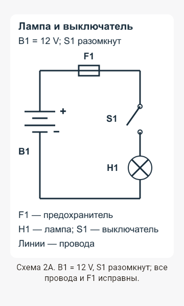
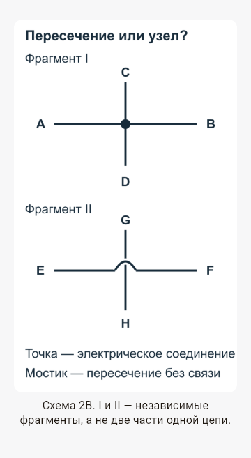
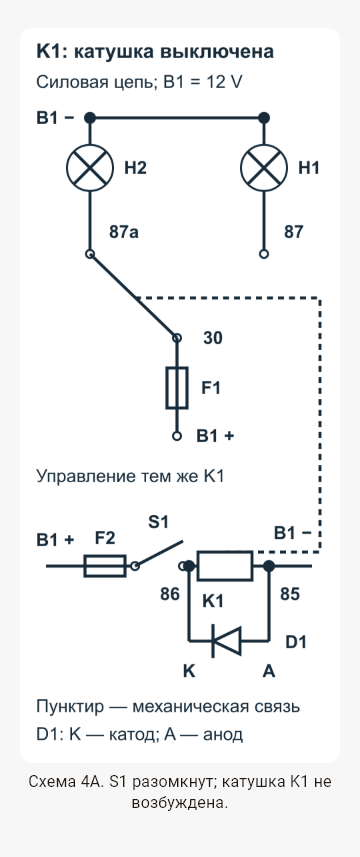
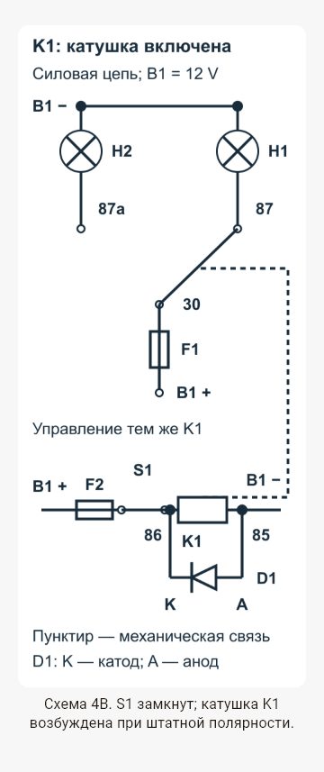
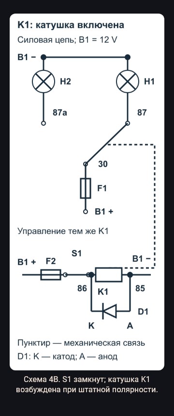
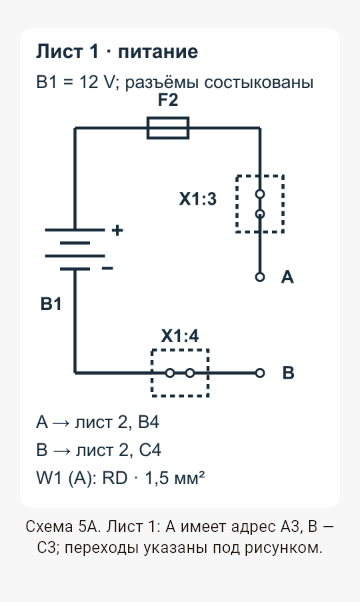
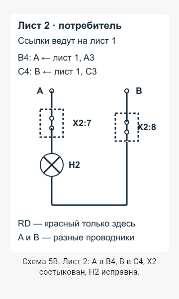
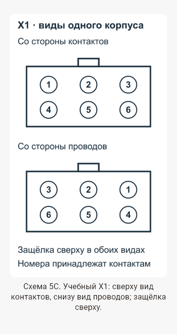

Снимки Flutter renderer: 360 logical px, изображение 320 px, текст подписи ×1,3. Для оценки размеров установите масштаб браузера 100%. На узком окне меньше 360 px галерея уменьшается: проверяйте на окне шириной хотя бы 360 px. Это предварительный просмотр; физический Android smoke ещё не выполнен.







